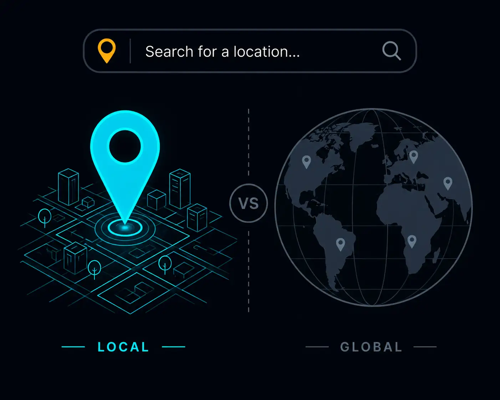
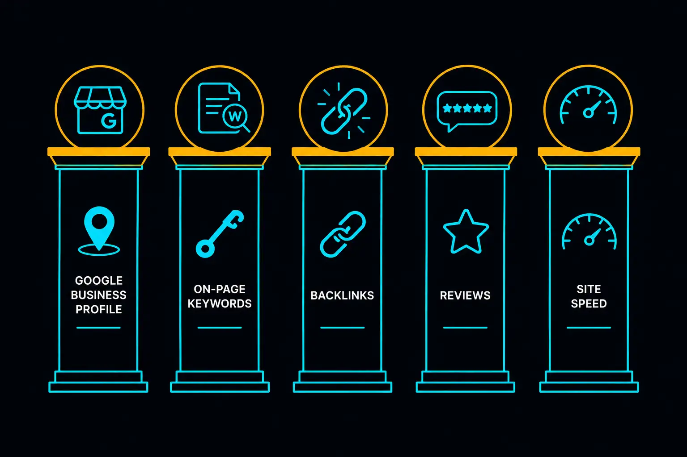
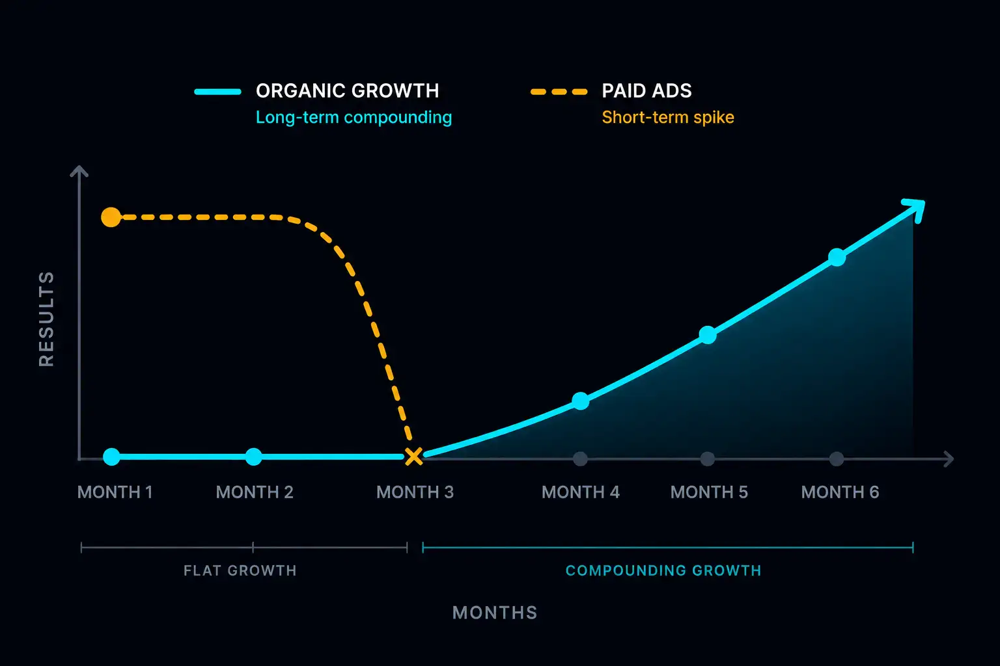

SEO — search engine optimisation — has a reputation for being complicated, expensive, and slow. Some of that reputation is earned. But for a Malaysian SME, you do not need a sophisticated SEO strategy to start appearing in Google. You need five foundational things done correctly.
This article covers those five. No jargon. No agency required. No content farm strategy. Just the basics for a local service business trying to get found.
Why Local SEO Is Different From General SEO
When someone searches "aircond service KL" or "hardware shop near me," Google is looking for something specific: the most relevant, credible, nearby business. This is local SEO — and it works differently from ranking for a broad term like "best project management software."
For local SEO, proximity, relevance, and trust signals in your geographic area matter far more than domain authority or backlink volume. A business with a well-set-up Google Business Profile and a basic website will outrank a business with no local presence, even if the second business has more website traffic overall.
This is good news for small businesses. You do not need to outrank the internet. You need to outrank the three other local businesses competing for the same customer in the same suburb.

The Five Foundations
1. Claim and complete your Google Business Profile
This is the single highest-impact action a local business can take for SEO basics — and it is free.
Your Google Business Profile is what appears when someone searches your business name, or when Google shows a map pack of local results. It shows your address, phone number, hours, photos, reviews, and a link to your website.
If you have not claimed it, go to business.google.com and claim your listing. If you have claimed it but left it half-completed, finish it now:
- Business name (exactly as it appears on your signage and website)
- Full address, or service area if you are mobile
- Phone number
- Business category (be specific — "Air Conditioning Contractor" not just "Home Services")
- Website URL
- Opening hours
- At least 5 photos of your premises, work, or team
- A short description that mentions your service and location naturally
A complete Google Business Profile also gives you a dedicated page for reviews. More on that shortly.
If you want a step-by-step walkthrough of the setup process, read our article on How to Set Up Google Business Profile for a Malaysian SME.
2. Make sure your website mentions your location specifically
Google cannot guess where you operate. Your website needs to say it plainly.
This means your homepage should include your city, your coverage area, and ideally specific suburbs — in plain text, not just in an image or a map embed. A sentence like "We provide aircond installation and service across Klang Valley, including Petaling Jaya, Shah Alam, Subang Jaya, and Cheras" tells Google and tells your visitors.
Also ensure your business name, address, and phone number appear in text on your website — typically in the footer. This trio (called NAP: Name, Address, Phone) should match exactly what you have listed on your Google Business Profile. Inconsistencies between the two confuse Google's local ranking signals.
3. Use the words your customers actually search
This is keyword research at its most basic — and for local SEO, it is straightforward.
Think about the phrases a potential client would type into Google when looking for your service. Not the technical terms you use internally, but the words a business owner or homeowner would use.
A few examples:
- "aircond service KL" not "HVAC preventive maintenance Kuala Lumpur"
- "renovation contractor Subang" not "interior fit-out specialist Subang Jaya"
- "catering for corporate events KL" not "F&B event management solutions"
Use these natural phrases in your page title, your first paragraph, your services section, and your page headings. You do not need to stuff them unnaturally — one clear mention in each of those places is enough for Google to understand what you do and where.
Free tools to find out what people are actually searching: Google Search Console (once your site is registered), Google's autocomplete in the search bar, and the "People also ask" section on any Google results page.
4. Get Google reviews consistently
For local SEO basics, reviews are one of the most powerful ranking signals — and also one of the most neglected.
Businesses with more, newer, and more detailed reviews consistently outrank competitors with fewer reviews, all else being equal. A business with 40 reviews ranking 3.8 stars will generally appear above a business with 8 reviews ranking 4.5 stars, in local search results.
The simplest system: after completing a job, send a WhatsApp message to the client asking for a Google review, with a direct link to your Google Business Profile review page. Most satisfied clients will leave a review if the request is politely made and the link is right there — the friction of finding the review page themselves is often what stops people.
Aim for a steady drip: 2 to 4 reviews per month is far more valuable than a burst of 20 in one week followed by nothing for 6 months. Google rewards recency.
5. Register your website with Google Search Console
Google Search Console is a free tool that tells Google your website exists and should be indexed. It also shows you which search terms people are using to find your site, which pages are ranking, and whether there are any technical issues preventing Google from crawling your content.
Setting it up involves:
- Going to search.google.com/search-console
- Adding your website as a property
- Verifying ownership (the easiest method is through Google Analytics or by adding a small HTML tag — your web developer can do this in 5 minutes)
- Submitting your sitemap (a file that lists all your pages — most website builders generate this automatically)
Once registered, Google Search Console is the most direct feedback you will get on your SEO performance without paying for any tools.

What Not to Bother With (Yet)
Link building
Link building — getting other websites to link to yours — is a legitimate long-term SEO strategy. It is also time-consuming, complex, and largely irrelevant until you have done the five foundations above. Do not spend energy on links before your Google Business Profile is complete and your site mentions your location correctly.
Publishing weekly blog articles
Content marketing works for SEO, but it is a long game and it requires consistent execution. For a sole operator running a local service business, publishing weekly articles is not a realistic ask. The five foundations above will produce more local search impact per hour of effort than almost anything else.
Paid SEO tools
Tools like Ahrefs, SEMrush, and Moz are designed for businesses doing serious keyword research at scale. For a Malaysian SME doing local SEO basics, Google Search Console and Google's free tools are sufficient.
How Long Does This Take to Work?
Local SEO is not instant. A realistic timeline:
- Google Business Profile updates: visible in Google Maps within days to weeks of completing your profile
- Website appearing in search results: typically 4 to 8 weeks after Google indexes a new site
- Meaningful organic traffic from search: 3 to 6 months for a new site, faster for an established domain
The foundation work you do today starts paying off in 3 months and continues paying off indefinitely. Every month you delay is a month your competitors accumulate ranking history ahead of you.
